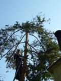
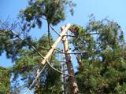

Údržba zeleně
Rizikové kácení stromů horolezeckou technikou a pomocí výsuvných žebříků
Kácení nebezpečně rostlých, či rizikových stromů. V případě ohrožení Vašeho majetku stromem nebezpečně nakloněným, vyvráceným, nebo zlomeným z důvodu námrazy, silného větru apod. je možnost okamžitého výjezdu včetně víkendů a svátků. Lze tak předejít následným škodám na majetku, popřípadě snížit škody na minimum.
 zpět